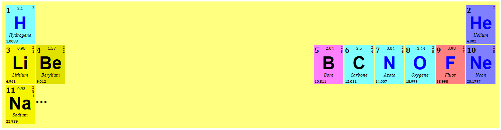
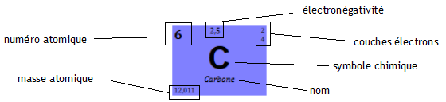

Dans cet exercice nous allons utiliser les propriétés permettant d'agir sur la positions des blocs dans la page pour produire une classification périodique des éléments chimiques comme celle présentée à la figure suivante.

Classification périodique partielle
Une version complète peut par exemple être trouvée ici ou ici.
Nous allons commencer par nous intéresser à la mise en forme des données pour un atome. Les données que nous voulons afficher sont présentées à la figure suivante qui sert également de modèle pour le résultat à obtenir.

L'élément Carbone et ses données
Le fichier hydrogene-carbone.html contient des données pour les atomes hydrogène et carbone. Des classes ont été créées pour structurer et typer ces données. Etudiez cette structure. Vous pouvez constater que les données n'apparaissent pas dans le même ordre pour les deux atomes. Vous les laisserez telles qu'elles, pour autant on voudra obtenir la même présentation pour les deux atomes (voir image précédente).
Fixer une largeur, une hauteur, une couleur d'arrière plan pour les <div> de la classe atome.
Vous pouvez utiliser le fichier hydrogene-carbone.css qui définit quelques propriétés de base pour les différentes éléments. Nous allons le compléter dans la suite de l'exercice.
On souhaite placer le numéro atomique en haut à gauche : à 0% du bord haut, et à 2% du bord gauche définis par la boîte de l'élément <div> de la classe atome qui le contient. Quelles propriétés faut-il ajouter au sélecteur div.numero ? Quelle propriété faut-il modifier pour les div.atome ?
Procéder de manière similaire pour
l'électronégativité : à 1% du bord haut et 40% du bord gauche,
les couche d'électrons : à 1% du bord haut et 2% du bord droit,
la masse atomique : à 1% du bord bas et 2% du bord gauche.
Définissez les propriétés qui permettent de décaler vers le bas par rapport à leur position actuelle de 20% le symbole chimique et de 15% le nom de l'élément chimique.
Vous devez maintenant avoir obtenu un résultat similaire à l'image précédente et, mis à part l'élément div.nom qui doit se trouver après l'élément div.symbole, vous devez pouvoir changer l'ordre des données au sein du bloc div.atome sans que cela ait un impact sur l'affichage.
Poursuivons avec la construction de la table. Les données sur les 11 premiers atomes se trouvent dans le fichier tablePeriodique.html. Ajoutez le contenu de la feuille de style produite à la question précédente au fichier style-tablePeriodique.css. Les éléments s'affichent pour le moment les uns en dessous des autres.
Les éléments de classe atome sont pour le moment positionnées les uns en dessous des autres dans les différentes lignes. Quelle propriété permet de changer le comportement des blocs div.atome pour qu'ils s'affichent les uns à côté des autres ?
Pour obtenir le placement désiré des éléments, nous allons rendre flottants à gauche et à droite, selon ce qui est désiré, les blocs correspondant aux atomes.
Pour cela, après avoir identifié à quoi correspond l'élément div.bloc dans le document, définissez pour les éléments de cette classe bloc la valeur de propriété float qui convient.
Finissons avec un peu de cosmétique :
Dans les conditions normales, certains éléments chimiques sont naturellement solides (Li, Be, B, C et NA pour ceux qui nous concernent), d'autres des gaz (les autres). Attribuez une couleur particulière aux symboles des gaz et une autre aux symboles des solides (il faut définir des classes et les attribuer dans le code html).
Dans les éléments chimiques on identifie plusieurs types :
les non-métaux : H, C, N,O,
les métaux alcalins : Li, Na,
les métaux alcalino-terreux : Be,
les métalloïdes : B
les halogènes : F,
les gaz rares : He et Ne.
Il est d'usage de représenter dans la table périodique ces types par différentes couleurs. Définissez des couleurs de fond que vous associerez aux éléments chimiques selon leur type.
Définissez une règle CSS telles que le nombre d'électrons de la première couche soit de couleur rgb(128,0,0), celui de la seconde couche rgb(64,0,0) et celui de la troisième couche rgb(32,0,0).
Vous pouvez aussi décaler ces nombres vers le haut de 2px pour le premier, 4px pour le second et 6px.